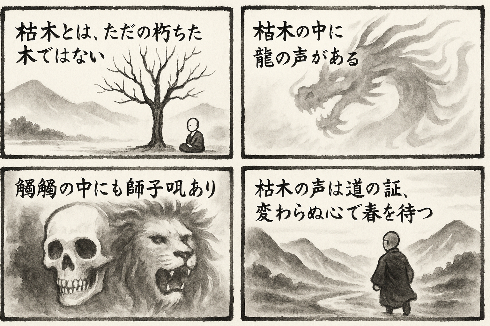

七十五巻 巻一覧
正法眼藏第61 龍吟
本ページの導入・語彙・深掘り・クイズは tools/regen_volume_intro_from_corpus.py が OpenAI API で生成したものです（入力は当巻冒頭原文の抜粋）。内容はモデル出力のため、重要箇所は必ず原文・教本と照合してください。
出典: https://shomonji.or.jp/zazen/doc/genzou.html
（ローカル生成の全文: 全文ページ）
この巻の位置（導入）
この巻では、枯木と龍吟の関係についての問答が展開され、外道と仏道の理解の違いが示されています。
師が髑髏に師子吼があると述べることで、枯木の中に潜む真理が語られています。
語彙の足場
- 枯木：枯れた木を指し、外道の理解とは異なる仏道の枯木が存在することを示す象徴的な存在。
- 龍吟：枯木の中にある深い真理や教えを象徴する音声であり、悟りの表現とも解釈される。
- 師子吼：仏道の真理を力強く表現することを示す言葉で、髑髏の中にもその真理が存在することを意味する。
- 血脈：教えの伝承や継承を表すもので、道が途絶えないことを示す重要な概念である。
- 海枯：海が干上がることを指し、枯木が持つ生命力や再生の可能性を示唆する。
本文（冒頭・抜粋）
出典はリポジトリ内 doc/正法眼蔵.txt です。原文の参照元: https://shomonji.or.jp/zazen/doc/genzou.html
舒州投子山慈濟大師、因僧問、枯木裏還有龍吟也無（枯木裏還龍吟有りや無や）。
師曰、我道、髑髏裏有師子吼（我が道は、髑髏裏に師子吼有り）。
枯木死灰の談は、もとより外道の所教なり。しかあれども、外道のいふところの枯木と、佛祖のいふところの枯木と、はるかにことなるべし。外道は枯木を談ずといへども枯木をしらず、いはんや龍吟をきかんや。外道は枯木は朽木ならんとおもへり、不可逢春（春に逢ふべからず）と學せり。佛祖道の枯木は海枯の參學なり。海枯は木枯なり、木枯は逢春なり。木の不動著は枯なり。いまの山木、海木、空木等、これ枯木なり。萌芽も枯木龍吟なり。百千萬圍とあるも、枯木の兒孫なり。枯の相、性、體、力は、佛祖道の枯樁なり。非枯樁なり。山谷木あり、田里木あり。山谷木、よのなかに松栢と稱ず。田里木、よのなかに人天と稱ず。依根葉分布（根に依つて葉分布す）、これを佛祖と稱ず。本末須歸宗（本末須らく宗に歸すべし）、すなはち參學なり。かくのごとくなる、枯木の長法身なり、枯木の短法身なり。もし枯木にあらざればいまだ龍吟せず、いまだ枯木にあらざれば龍吟を打失せず。幾度逢春不變心（幾度か春に逢ひて心を變ぜず）は、渾枯の龍吟なり。宮商角徴羽に不群なりといへども、宮商角徴羽は龍吟の前後二三子なり。
しかあるに、遮僧道の枯木裏還有龍吟也無は、無量劫のなかにはじめて問頭に現成せり、話頭の現成なり。
投子道の我道髑髏裏有師子吼は有甚麼掩處（甚麼の掩ふ處か有らん）なり。屈己推人也未休（己れを屈して人を推すこと也未だ休せず）なり。髑髏遍野なり。
香嚴寺襲燈大師、因僧問、如何是道（如何ならんか是れ道）。
師云、枯木裡龍吟。
僧曰、不會。
師云、髑髏裏眼睛。
後有僧問石霜、如何是枯木裡龍吟（後に僧有つて石霜に問ふ、如何ならんか是れ枯木裡の龍吟）。
霜云、猶帶喜在（猶喜を帶すること在り）。
僧曰、如何是髑髏裏眼睛（如何ならんか是れ髑髏裏の眼睛）。
霜云、猶帶識在（猶識を帶すること在り）。
又有僧問曹山、如何是枯木裡龍吟（後に僧有つて石霜に問ふ、如何ならんか是れ枯木裡の龍吟）。
山曰、血脈不斷。
僧曰、如何是髑髏裏眼睛（如何ならんか是れ髑髏裏の眼睛）。
山曰、乾不盡。
僧曰、未審、還有得聞者麼（未審、還た得聞者有りや）。
山曰、盡大地未有一箇不聞（盡大地に未だ一箇の不聞有らず）。
僧曰、未審、龍吟是何章句（未審、龍吟是れ何の章句ぞ）。
山曰、也不知是何章句（也た是れ何の章句なるかを知らず）。
聞者皆喪（聞く者皆喪しぬ）。
いま擬道する聞者吟者は、吟龍吟者に不齊なり。この曲調は龍吟なり。
枯木裡髑髏裏、これ内外にあらず、自他にあらず。而今而古なり。
猶帶喜在はさらに頭角生なり、猶帶識在は皮膚脱落盡なり。
曹山道の血脈不斷は、道不諱なり。語脈裏轉身なり。
乾不盡は海枯不盡底（海枯れて底を盡さず）なり、不盡是乾なるゆゑに乾上又乾なり。
聞者ありやと道著せるは、不得者ありやといふがごとし。
盡大地未有一箇不聞は、さらに問著すべし。未有一箇不聞はしばらくおく、未有盡大地時、龍吟在甚麼處、速道速道（未だ盡大地有らざる時、龍吟甚麼の處にか在る。速やかに道へ、速やかに道へ）なり。
未審、龍吟是何章句は、爲問すべし。吟龍はおのれづから泥裡の作聲擧拈なり。鼻孔裏の出氣なり。
也不知、是何章句は、章句裏有龍なり。
聞者皆喪は、可惜許なり。
いま香嚴、石霜、曹山等の龍吟來、くもをなし、水をなす。不道道、不道眼睛髑髏（道とも道はず、眼睛髑髏とも道はず）。只是龍吟の千曲萬曲なり。猶帶喜在也蝦䗫啼、猶帶識在也蚯蚓鳴。これによりて血脈不斷なり、葫蘆嗣葫蘆なり。乾不盡のゆゑに、露柱懷胎生なり、燈籠對燈籠なり。
正法眼藏龍吟第六十一
爾時寛元元年癸卯十二月廿五日在越宇禪師峰下示衆
弘安二年三月五日於永平寺書寫之
図解（4コマ・AI生成）
教義の根拠は本文・出典に従い、漫画は比喩の補助に留めてください。

深掘り（読解の手掛かり）
- 外道は枯木を理解できず、龍吟を聞くことができないとされる。
- 仏道の枯木は、春に再生する可能性を秘めていると解釈される。
- 髑髏の中に眼があることは、真理の存在を示す象徴である。
- 枯木と龍吟の関係は、内外や自他を超えた深い教えを表現している。
確認（形成評価）
各設問の下の「採点」で正誤を表示します（ブラウザ内のみ。ログは送りません）。